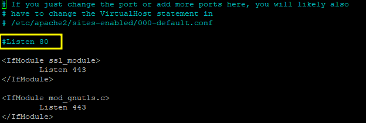

GLPI (Gestion Libre de Parc Informatique) est une solution open source de gestion de parc informatique et de service desk (ITSM). Elle permet de centraliser l'inventaire du matériel, des logiciels, des tickets d'incidents et des demandes des utilisateurs.
L'objectif de cette procédure est de déployer GLPI depuis zéro sur un serveur Debian minimal (pile LAMP), de sécuriser l'installation, de basculer en HTTPS, puis de mettre en place l'agent d'inventaire automatique côté serveur et côté client.
Ces valeurs sont indicatives et peuvent être ajustées selon le contexte :
glpi — Domaine : vey.lan.172.26.1.53.Ajouter le nom d'hôte dans le fichier hosts du poste Windows utilisé pour l'administration :
# C:\Windows\System32\drivers\etc\hosts # Ouvrir avec le Bloc-notes en tant qu'administrateur pour pouvoir l'enregistrer 172.26.1.53 glpi.vey.lan
Schéma de partitionnement retenu (à adapter selon la taille du disque) :
/ : 6 Go, primaire, indicateur d'amorçage présent (racine)./var : 3 Go, primaire (données variables).swap : 1,7 Go, primaire (partition d'échange mémoire).Au fil de l'installation : activer le serveur SSH, ne pas installer d'environnement de bureau (décocher GNOME), installer GRUB sur le disque principal.
Configurer ensuite l'adresse IP fixe :
# Installer sudo (optionnel) ou se connecter en root apt-get install sudo su - nano /etc/network/interfaces # Première interface auto eth0 allow-hotplug eth0 iface eth0 inet static address 172.26.1.53/23 gateway 172.26.1.254 # Optionnel, si pare-feu dans l'infra # Redémarrer le service réseau systemctl restart networking.service # Si l'interface ne s'active pas ifup eth0
sudo apt-get install apache2 -y systemctl status apache2 ss -laputn # Vérifier les ports d'écoute netstat -antp # Logs Apache cat /var/log/apache2/access.log cat /var/log/apache2/error.log # Erreurs de redémarrage du service
sudo apt-get install mariadb-server -y systemctl status mariadb
sudo apt-get install php -y php -v # Page de test phpinfo (paramètre dangereux, à supprimer après le test) cd /var/www/html/ nano php.info <?php phpinfo(); ?>
sudo apt-get install php-mysql -y
Récupérer la dernière version stable de GLPI :
# Meilleure solution : récupérer la dernière version stable wget https://github.com/glpi-project/glpi/releases/download/10.0.16/glpi-10.0.16.tgz # Décompresser l'archive tar -xzf glpi-10.0.16.tgz -C /var/www/html/
systemctl status mariadb mariadb CREATE database glpi; CREATE user bertrand; GRANT ALL ON glpi.* TO 'bertrand'@'localhost' IDENTIFIED BY '********' WITH GRANT OPTION; FLUSH PRIVILEGES;
cd /etc/apache2/sites-available cp 000-default.conf 001-default.conf
Configuration retenue pour l'hôte virtuel (port 80, nom de domaine glpi.vey.lan) :
<VirtualHost *:80>
ServerName glpi.vey.lan
ServerAdmin webmaster@localhost
DocumentRoot /var/www/html/glpi/public
ErrorLog ${APACHE_LOG_DIR}/error.log
CustomLog ${APACHE_LOG_DIR}/access.log combined
<Directory /var/www/html/glpi/public>
Require all granted
RewriteEngine On
RewriteCond %{REQUEST_FILENAME} !-f
RewriteRule ^(.*)$ index.php [QSA,L]
</Directory>
</VirtualHost>
a2enmod rewrite nano /etc/hosts # Ajouter : 172.26.1.53 glpi.vey.lan a2ensite 001-default.conf # Activer le site systemctl restart apache2.service
Accès en écriture temporaire nécessaire sur le dossier GLPI, puis installation des extensions PHP manquantes :
chown -R www-data:www-data /var/www/html/glpi sudo apt-get install php-xml php-common php-json php-mysql php-mbstring php-curl php-gd php-intl php-zip php-bz2 php-imap php-apcu -y
Lors de l'étape de connexion à la base de données pendant l'installation web :
localhostbertrandrm /var/www/html/index.html systemctl restart apache2
nano /etc/php/8.2/apache2/php.ini # Ctrl+W puis rechercher : session.cookie_httponly session.cookie_httponly = on systemctl restart apache2.service
cd /var/www/html/glpi/install/ rm install.php systemctl restart apache2
glpi, post-only, tech et normal depuis Administration → Utilisateurs → Mot de passe.# Activer le module SSL a2enmod ssl systemctl restart apache2.service # Créer un certificat autosigné cd /etc/apache2/ mkdir ssl openssl req -nodes -newkey rsa:2048 -sha256 -keyout /etc/apache2/ssl/glpi.key -out /etc/apache2/ssl/glpi.crt chmod 600 /etc/apache2/ssl/* # Common Name renseigné : glpi.vey.lan
Créer le second VHOST pour le port 443 :
<IfModule mod_ssl.c>
<VirtualHost *:443>
ServerName glpi.vey.lan
ServerAdmin webmaster@localhost
DocumentRoot /var/www/html/glpi/public
<Directory /var/www/html/glpi/public>
Require all granted
RewriteEngine On
RewriteCond %{REQUEST_FILENAME} !-f
RewriteRule ^(.*)$ index.php [QSA,L]
</Directory>
SSLEngine on
SSLCertificateFile /etc/apache2/ssl/glpi.crt
SSLCertificateKeyFile /etc/apache2/ssl/glpi.key
</VirtualHost>
</IfModule>
Rediriger le VHOST HTTP vers HTTPS, puis sécuriser le cookie de session :
nano /etc/apache2/sites-available/001-default.conf # Ajouter : Redirect permanent / https://glpi.vey.lan systemctl reload apache2 systemctl restart apache2 # Sécuriser le cookie de session en HTTPS nano /etc/php/8.2/apache2/php.ini # Ctrl+W -> session.cookie_secure session.cookie_secure = 1
Enfin, désactiver l'accès HTTP maintenant que le HTTPS fonctionne :
nano /etc/apache2/ports.conf # Commenter la ligne "Listen 80" systemctl restart apache2.service

wget https://github.com/glpi-project/glpi-inventory-plugin/releases/download/1.3.5/glpi-glpiinventory-1.3.5.tar.bz2 tar xjvf glpi-glpiinventory-1.3.5.tar.bz2 -C /var/www/html/ chown -R www-data:www-data * # Propriétaire du dossier /html/ rm -f glpi-glpiinventory-1.3.5.tar.bz2
Sur l'interface web GLPI, aller dans Administration → Inventaire, activer l'inventaire et sauvegarder.
Télécharger l'agent depuis le dépôt officiel (glpi-project/glpi-agent) et renseigner les cibles lors de l'installation :
C:\Program Files\GLPI-Agent\ (peut rester vide).http://glpi.vey.lan/glpi (dépend de l'URL d'accès au site).C:\Program Files\GLPI-Agent\logs./etc/apache2/ports.conf.# Pour forcer un inventaire rapidement depuis le client
127.0.0.1:62354
Si le pare-feu client n'autorise pas l'agent GLPI, ouvrir le port nécessaire ou désactiver temporairement le pare-feu pour les tests.
install/ de GLPI doit être supprimé après l'installation, sinon n'importe qui peut relancer l'assistant d'installation.